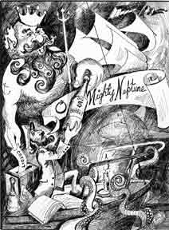

About
About Projects
Projects Books
Books Games
Games Stories
Stories Store
Store Notes
Notes How-to
How-to2023.11.16 This is a mirror of an article by John Vigor. The original website hosting it is now down. I mirrored it because I quite like it and would hate for it to be lost.
The Black Box Theory
Just when you thought it was safe to go back in the water...
Why is it that some sailors go quietly about their business, consistently making quick, safe, and satisfying passages, while others lurch erratically from port to port amid a series of catastrophes? Is it luck? No, it's the Fifth Essential.
I first stumbled across the concept more than 30 years ago, when I was a newspaper reporter in Durban, South Africa. One of my early assignments was to cover a speech by a visiting American yachtsman and scientist, a talk he called "The Fifth Essential for Successful Yacht Voyages." He talked about it for a full half-hour, but never once mentioned what the Fifth Essential was. "I'm not superstitious," he said, "but I am not going to name it. I'll leave that to you to work out."
He listed the first four essentials in this order:
- 1. A well-found ship
- 2. A good crew
- 3. Adequate preparation and maintenance
- 4. Seamanship
 As he wouldn't name the Fifth Essential, he could only describe how it worked. He offered some well-documented examples of how it had affected the lives of yachting pioneers.
We soon got the idea. Take Joshua Slocum, for instance. During his circumnavigation he was chased by a pirate vessel off the coast of Morocco. He cracked on all sail, but the pirates were still bearing down on him. Determined to give a good account of himself, he ducked down below for his rifle. Suddenly a squall hit the Spray. When his little vessel was under control again, he glanced back and saw that the squall had dismasted the pirate ship, which lay wallowing in the wreckage of its spars.
Then there was Harry Pidgeon, who sailed twice around the world singlehanded. On one occasion, when a change in wind direction set his yawl, Sea Bird, sailing toward the coast while he slept below, the boat ran aground on the only sandy bay in tens of miles of rocky coastline. Furthermore she had to pass over a rocky ledge at the entrance to the bay. Had it been low tide when Sea Bird sailed in so confidently, she would have gotten no farther. As it happened, Pidgeon was able to refloat her, refit her, and carry on.
Over the years I noted the same theme recurring in talks with such splendid seamen as Bernard Moitessier, Jean Gau, and Eric Hiscock. In fact, I expect all of us who have sailed for any time have had similar experiences - and thanked our lucky stars at the time. But it isn't luck, really. There's much more to the Fifth Essential than mere chance.
In 1986, when I started fitting out my own 31-footer, Freelance, for a voyage from Durban to the United States, I reduced the Fifth Essential to a simple system of accident prevention. In the Freelance corollary to the theory, every boat possesses an imaginary black box, a sort of bank account in which points are kept. In times of emergency, when there is nothing more to be done in the way of sensible seamanship, the points from your black box can buy your way out of trouble. You have no control over how the points are spent, of course; they withdraw themselves when the time is appropriate. You do have control over how the points get into the box: you earn them. For every seamanlike act you perform, you get a point in the black box. Points come in so many ways it would be impossible to list them all. But I can send you in the right direction. Let's say you're planning a weekend cruise down the coast, and time is precious. You have been wondering for some weeks if you ought to haul out the bosun's chair and inspect the masthead fittings. It has been a couple of years since you checked everything up there, but it would mean delaying your departure by an hour, maybe more, should you have to change a shackle or something.
If you finally give in to the nagging voice inside you and go aloft, you earn a point in the box. If you don't take that trouble, your black box will stay empty. If you sniff the bilges for fumes before pushing the starter button, you'll score a point, just as you will for taking a precautionary reef at nightfall or checking the expiration date on your rocket flares. Thinking and worrying about what could happen is also a good way to earn points - if the wind started blowing into your quiet anchorage at 40 miles an hour and the engine wouldn't start, or whether you should put a couple of reefs in the mainsail before you climb into your bunk, just in case.
No matter how good your seamanship, there are times when there is nothing left to do but batten down the hatches and pray. If you have a credit balance of points in the box, you'll be all right. People will say you're lucky, of course. They'll say a benign fate let you get away with it. But we know better. That luck was earned, maybe over quite a long period.
Not that there's any room for complacency. If an emergency drains all the points from your black box, you must immediately set about replacing them by tending to your boat, your crew, and yourself in a seamanlike way and by practicing extra caution for as long as seems right.
It may seem unfair that you cannot check your credit balance in the black box, but it's just as well. If I knew I had sufficient points to get me through a weekend, I might not bother to go up the mast before setting out. Not knowing keeps us on our toes.
In practice, however, your conscience will be a good guide. Have you put off changing the engine oil for the umpteenth time? Does the port navigation light still need a new bulb? Be careful. You may be running low on points.
In the same way, your conscience will tell you when you have credit. You will glow with that quiet sort of confidence that inspires crews and makes for happy voyages.
This article was taken from Good Old Boat Magazine: Volume 2, Number 4, July/August 1999.